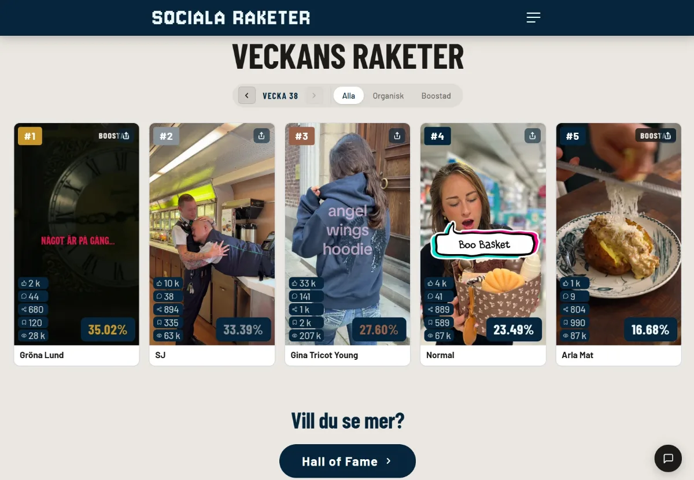

Mitt största projekt · TikTok
Sociala
raketer.
Vad engagerar på TikTok? Veckans topplista över svenska varumärken och organisationer, rankad efter engagemang. Många företag finns på sociala medier – få skapar innehåll som faktiskt berör. Siffrorna avslöjar vem.
Besök socialaraketer.se ↗